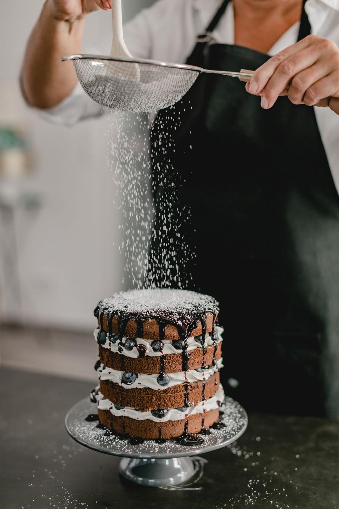

ברוכים הבאים ל-Sweet Symphony
Sweet Symphony הוא בית ספר יוקרתי לקונדיטוריה שהוקם מתוך תשוקה עמוקה לעולם הקינוחים והמתוקים. כל שיעור וסדנה מיועדים להעשיר את הידע הקולינרי שלכם ולחשוף אתכם לטכניקות ולמתכונים ברמה הגבוהה ביותר.
החזון שלנו
החזון שלנו ב-Sweet Symphony הוא להעניק לסטודנטים ולחובבי מתוקים חוויית לימוד ייחודית בקונדיטוריה, תוך הקפדה על חדשנות ואיכות בלתי מתפשרת. אנו עובדים עם חומרי גלם טבעיים בלבד ומשלבים טכניקות מקצועיות וחדשניות עם מתכונים קלאסיים ומודרניים כאחד.
אומנות יצירת המתוקים
ב-Sweet Symphony אנחנו מתמקדים בשיפור מתמיד של יכולות ומיומנויות הלמידה. תהליך הייצור וההוראה שלנו משלב עקרונות מסורתיים עם גישות מודרניות, ומעניק לסטודנטים את כל הכלים להצליח בתחום.
צוות המומחים שלנו
צוות המומחים שלנו כולל קונדיטורים בעלי ניסיון עשיר, שהוכשרו בבתי הספר המובילים בעולם בתחום. כל אחד מחברי הצוות מביא עמו ידע וכישרון ייחודיים, ויחד הם מעניקים לתלמידים חוויית לימוד מרתקת ומהנה.
פותח על ידי: מיה דוידי, לידר רצר, בנימין גולן, ירדן דואניס.
במסגרת קורס "פיתוח אתרי אינטרנט" בשנה א', תשפ"ד, הפקולטה לטכנולוגיות למידה, HIT המכון הטכנולוגי חולון.
הפקולטה לטכנולוגיות למידה